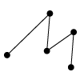

オブジェクト
KVS内で効率的にデータを扱うために様々なデータ構造（object）が用意されています．
KVSで定義されているObject には幾何学形状を扱うための
点データ（PointObject），
線データ（LineObject），
面データ（PolygonObject）
ボリュームデータを扱うための
構造型ボリュームデータ（StructuredVolumeObject），
非構造型ボリュームデータ（UnstructuredVolumeObject）
が用意されています．
|  | ||
| PointObject | LineObject | PolygonObject |
| 点群データ | 線データ | 面データ |
| StructuredVolumeObject | UnstructuredVolumeObject |
| 構造型ボリュームデータ | 非構造型ボリュームデータ |
FLDファイル
CG研で多く使われているボリュームデータはAVS Fieldファイルといい，
拡張子が『.fld』であることから"FLDファイル"と呼んでいます．
FLDファイルは以下のような形式で記述されています．
ndim = 3 // 空間の次元数
dim1 = 2 // x軸方向のグリッド数
dim2 = 2 // y軸方向のグリッド数
dim3 = 2 // z軸方向のグリッド数
nspace = 3 // 各軸の次元サイズ
veclen = 1 // 各要素のデータ数（スカラーデータならば１）
data = double // データの型
field = uniform // ボリュームデータのフィールドタイプ（座標情報）
^L^L…以下フィールド値….
問題 ボリュームデータの記述について
上述では，FLDファイルの記述方法について簡単に述べています．それぞれの変数（ndim, dim1, vecle 等）について詳細を調べなさい．
ＫＶＳでは，ボリュームデータの記述形式として
- ・KVSML ( KVＳ独自のファイルフォーマット)
- ・AVS Field
- ・AVS UCD
に対応しています．それぞれのファイル形式について調査しましょう．
また，ボリュームデータ可視化ソフトについて
- どのようなソフトウェアがあるのか
- どのようなファイルが入力できるのか
- どのような絵が描けるのか
調査してみましょう．
（例えば，ＣＧ研にはMicroAVS（サイバネット社）があります）
Modefied at July 2, 2013
at April 21, 2017